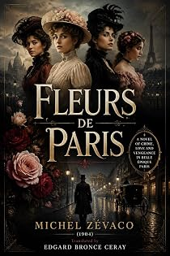

Fleurs de Paris
First English edition (1904)
by Michel Zévaco · translated by Edgard Bronce-Ceraypar Michel Zévaco · traduit par Edgard Bronce-Ceray
The bookLe livre
A wedding breakfast in a Paris neighbourhood: glasses knocked together, laughter wet with tears, a blonde bride so happy it is a blessing to look at her. Zévaco puts the reader inside that warmth for exactly as long as it takes to make what follows unbearable. A contemporary novel of 1904, in English for the first time.
Un repas de noces dans un quartier de Paris : les verres qu'on choque, des rires mouillés de larmes, une mariée blonde si heureuse que c'est une bénédiction de la regarder. Zévaco installe le lecteur dans cette chaleur juste le temps qu'il faut pour rendre la suite insupportable. Un roman contemporain de 1904, en anglais pour la première fois.
From the opening pagesLes premières pages
"…And to finish with a single word, Mademoiselle Lise — beg pardon: Madame now! — as surely as you are the pearl of the neighborhood… happiness! We wish you a heartful of it, a lifetime of it!"
Then, around the bride, comes a crystalline clinking of glasses knocked together, a jumble of tender good wishes, of hearty laughs moist with tears, an explosion of enchanted affection.
And she, a blonde with blue eyes, she, so proudly happy and so preciously pretty that it is a blessing, truly, to behold so much grace and happiness united in a single human face, smiling, stammering — it is toward him… toward her Georges… toward the beloved husband that she turns her gaze, drowned in tenderness.
He! Twenty-six years old, very elegant, with a distinction of speech and gesture that intimidates this milieu of petty bourgeoisie, a bold brow, eyes of a dizzying gentleness, a muffled disquiet beneath the mask of nonchalance… one of those tormented faces, too handsome, that drive the feminine imagination wild.
Around the family tablecloth they are twelve, no more: the bride, Lise; the groom, Georges Meyranes; witnesses and guests — well-off workmen of the neighborhood; — the bridesmaids: two working-class Watteaus in pink percale; and finally the widow Frémont, a figure of clear goodness beneath the rich Angevin coif, an admirable radiance of passionate affection whenever she gazes upon the one she calls her child, her daughter, her Lisette…
— Now then, resumes the witness who has just spoken — a metalworker from the Cail factory — no ceremony among us! There's no wedding without a song; each one of us must give his own!
— Ladies first, then! proclaims another — an electrician from the "Bon Marché" — and let the bride begin!
— Me, I ask for It's a Bird That Comes from France! shouts a guest.
Through the open window, a fine May sun casts its floods of gaiety into the dainty dining room. From the boulevard des Invalides rises the merriment of a children's round-dance. The bells of Saint-François-Xavier are chiming out for some ceremony. Over there, in the avenue de Villars, the band of a passing regiment flings out the ringing bursts of its brass…
And it is these plebeian joys, scattered through the air of this splendid afternoon, that come to join the intimate joy quivering on this third floor of the rue de Babylone.
And it is the distant fanfare, it is the neighboring bells, it is the sun, it is Paris that enter and murmur to the bride:
— How pretty she is!… Ah! may the wishes of the good folk around her come true!
Happy?… She is, beyond all wishing. She is living the dear dream of her heart. This adorable hour fulfills her every hope. Her name now is Mme Meyranes. And she repeats that name, very softly, in a rapturous ecstasy… Georges is hers!
He, meanwhile, as the glasses clink and foam and laugh… he, standing, stares at a point outside…
And it is not upon the two broad avenues that come crossing at this corner that the thunderbolt of his gaze falls — that gaze lit for an instant with a savage flash… nor upon the church where, barely three hours ago, the rings were exchanged…
It is, on the other side of the street, almost facing the window, upon one of those old, gloomy aristocratic mansions that dot this quarter — islets of the past in the ocean of modern Paris — a solemn dwelling… a deserted abode whose closed shutters veil a mourning perhaps, whose every stone sweats misfortune…
The hôtel d'Anguerrand… the mansion without a master… For where is the master, since the days when the Baroness d'Anguerrand gave her last ball there?… Who knows!…
— Yes, yes, one of the bridesmaids has cried. Lise, dear Lise, a love song!
— If Mother Madeleine is willing…, says the bride gaily.
— Of course, my child… since it's the custom in Paris, replies Mme Frémont. And besides, you sing so well… with such a sweet voice…
With her eyes, Lise questions the groom.
And he starts, torn from the distant dream that carries him away. Slowly, that gaze he had fixed, sinister, upon the ancient abandoned mansion, he brings back to his bride, with so fine a flame of love that she is left dazzled by it.
— What shall I sing? she stammered, to hide her confusion.
— My dear Lise, says the groom tenderly, the old song you sing so charmingly, and with which you sometimes soothed my fever when I was ill, when you and your good Mother Madeleine brought me back from death… yes, sing us Béranger's Lisette… since, after all, with so much charm and grace, you bear that pretty name yourself… Lisette…
— Bravo! And silence, all around! shouts the metalworker.
Lise, quite pale from the memory her Georges has just called up, rises.
At that moment, there is a knock at the door.
No one rings: someone knocks. Three sharp, short raps.
Lise, for an instant, has followed with her eyes Mother Madeleine, who has risen to go and open; then her eyes of light and love, by a movement as natural as that of the magnetized needle, return to the adored one, to the husband, to Georges…
And she stays frozen, chilled, wild with anguish…
And the atrocious sensation invades her that what knocks… is… misfortune!
For what she sees terrifies her… What she sees is the barely recognizable face of the groom… that livid face contorted by horror, where fear and audacity blend into a frightful expression of mortal waiting…
Why? Oh! why, with so terrible a face, does her beloved turn toward the door, simply because someone has knocked… knocked three sharp, short raps?…
With the incalculable speed of thought, in the second that precedes catastrophe or death, Lise, in a single flash, runs through her whole life.
Who is she? A foundling.
Coming back from Angers to Les Ponts-de-Cé, one Christmas night, Frémont the sharecropper and his wife Madeleine picked her up on the road, in the snow, half dead of hunger and cold.
That is all she knows of her childhood.
The people, down there, called her the bastard girl, and made her weep with their sneers.
And yet it is a radiant vision up to her fifteenth year, so dearly did the old couple love her.
The foundling, taken in, adopted, became the angel of that barren hearth, the passion, the joy, the glory of Frémont.
Then, an immense sorrow: the death of the sharecropper.
Then the departure for Paris: Mother Madeleine turned her savings into cash, some sixty thousand francs… and farewell to Les Ponts-de-Cé, where she was born, where she lived her long life, where her man and her forebears sleep: anything rather than see a tear of shame in the dear eyes of the little one!
Then the modest, dainty setting-up of house, and these two years just gone by in this quarter of Paris where no one dreams of reproaching her for having no name, where the whole neighborhood has come to dote on her, so sweet, so winning and graceful, so Parisian by instinct.
The excerpt ends here — about 1,207 words of the published edition.L'extrait s'arrête ici — environ 1,207 mots de l’édition parue.
KindlePaperbackBrochéContextContexte
Zévaco was a schoolmaster, then a cavalry officer, then an anarchist journalist who fought duels over his editorials and went to prison for his convictions. He came to the novel in his forties and conquered it at once: from 1900 his serials ran in the great Paris dailies and were read by millions. Sartre, remembering his childhood in Les Mots, called him a writer of genius. He has been read in Persian, Turkish, Arabic, Romanian and Spanish. In English, for more than a century, he was effectively unavailable. The Zévaco Project is the first attempt ever made to translate his complete novels — one volume at a time, until the canon is closed.
Zévaco fut maître d'école, puis officier de cavalerie, puis journaliste anarchiste — un homme qui se battait en duel pour ses éditoriaux et fit de la prison pour ses convictions. Il vint au roman passé la quarantaine et le conquit aussitôt : à partir de 1900, ses feuilletons paraissaient dans les grands quotidiens parisiens et se lisaient par millions. Sartre, se souvenant de son enfance dans Les Mots, le tenait pour un écrivain de génie. On l'a lu en persan, en turc, en arabe, en roumain, en espagnol. En anglais, pendant plus d'un siècle, il fut pratiquement introuvable. Le Projet Zévaco est la première tentative jamais faite de traduire son œuvre romanesque complète — un volume après l'autre, jusqu'à la clôture du corpus.
The whole programmeTout le programme